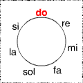
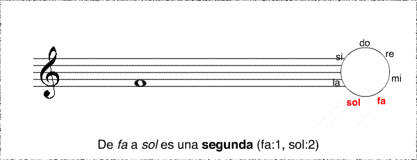

Intervalos
Un intervalo mide la distancia entre dos notas musicales. Es importante conocer los intervalos para poder construir escalas y acordes. Contando el número de grados entre las notas obtenemos el nombre del intervalo. Al contar los grados debemos incluir tanto la primera como la última nota. Para esto es importante conocer el nombre y orden de las notas musicales:
Veamos un ejemplo:
Movimientos melódicos
Hay dos tipos de movimientos melódicos: El conjunto y el disjunto. El conjunto sucede cuando el movimiento es de un intervalo de segunda menor o segunda mayor, es decir, que la nota anterior esta inmediatamente arriba o abajo de la nota destino. El movimiento disjunto ocurre cuando el movimiento es por salto (cualquier intervalo mayor a una segunda). Los movimientos pueden ser ascendentes o descendentes. Qué es la melodía Las melodías suelen diferenciarse de todas las demás por su estructura rítmica y melódica, sus intervalos, su contorno e incluso el instrumento en el que se le interpreta; lo cual afecta al timbre de la melodía. No sonará igual una melodía interpretada en una guitarra que en una flauta.